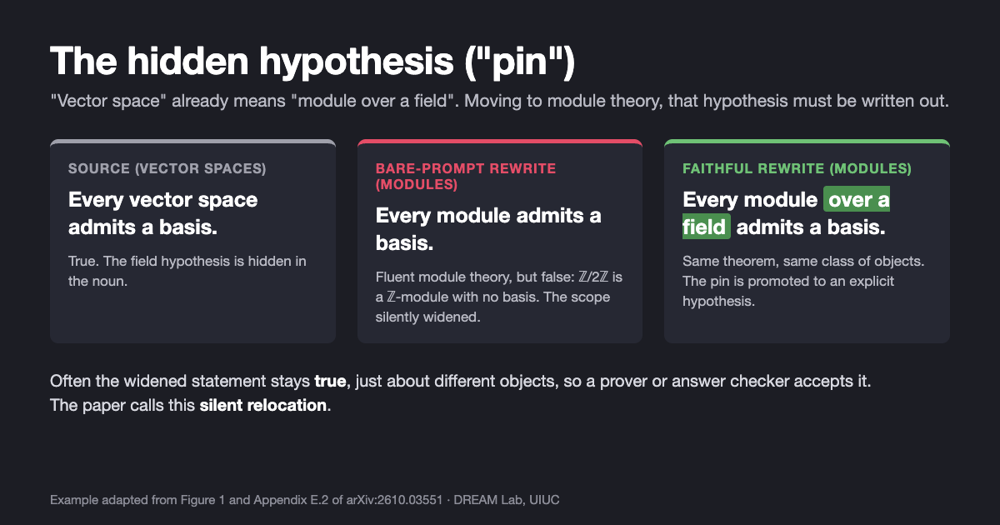
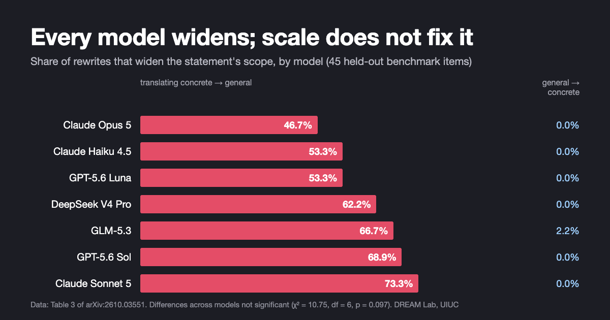

Is AI Math Just Search? What LLMs Miss Between Math Fields
Search plus a checker can certify a proof. It cannot tell whether a model keeps track of what a theorem assumes, and our study finds that models often do not.
By Yanli Wang and Haohan Wang · · About our 2026 arXiv preprint (arXiv:2610.03551)
On October 6, 2026, OpenAI released hundreds of research-level mathematics manuscripts written by an unreleased model, and the old question came back with new force: is AI math just search, or does the model understand the mathematics? Our new paper, Objects Without Morphisms: What LLMs for Mathematics Do Not Represent, by Yanli Wang (Imperial College London), Suijin Wang (Tsinghua University), Xiaopeng Yuan and Haohan Wang (University of Illinois Urbana-Champaign), tests one part of mathematics that search plus a verifier does not cover: restating a theorem in a neighbouring field. Across seven LLMs, rewrites toward the more general field widened the theorem's scope in 60.6% of cases and narrowed it in none.
Key findings
- In Objects Without Morphisms (arXiv 2026), seven LLMs from four families restated theorems from a concrete field in a more general one (for example, vector spaces to modules); 60.6% of the rewrites asserted the result of a wider class of objects than the source, and 0% narrowed it.
- In the opposite direction, from the general field to the concrete one, the same models narrowed scope in 28.3% of rewrites and widened it in 0.3%, the signature of a quantity that is not computed at all rather than of random imprecision, according to the 2026 study by Wang, Wang, Yuan and Wang.
- Scale did not remove the error: the most capable model tested, Claude Opus 5, widened scope least (46.7%) and Claude Sonnet 5 most (73.3%), with no significant difference across the seven models (p = 0.097); the effect replicated on 45 held-out benchmark items and on 25 pairs of statements written by mathematicians on ProofWiki.
- Telling Claude Opus 5 to state every hypothesis it needs raised the rate of writing out the hidden hypothesis from 8 of 37 rewrites (21.6%) to 89.2%, but the model also kept hypotheses where they should be dropped, so the instruction did not make it track when a hypothesis is required.
What did OpenAI's October 2026 math release show?
On October 6, 2026, OpenAI published the openai/math repository: 722 manuscripts in 372 result families, produced by an unreleased internal model. According to the repository README, the model was posed about 4,000 problems over the course of the evaluation, each published result used on average about three hours of ChatGPT Pro thinking compute, some outputs build on earlier results produced by the models, and the catalogue was assembled by "requiring an appropriate level of significance." At release, the formalization catalogue listed 162 papers whose main result is formalized in the Lean proof assistant; the README warns that some unformalized results could have issues. A day later OpenAI withdrew three manuscripts after a sign error, revised 14 others, and now reports 719 manuscripts with about 42% of top-line results formalized.
How the results were produced matters for the “insight or search” question. An OpenAI spokesperson told Scientific American that almost every result came from a single prompt to a single agent, and that some results might have taken multiple attempts. The same article contrasts this with OpenAI's earlier Navier–Stokes result, which it describes as the work of a 10,000-agent swarm costing millions of dollars in compute. OpenAI has not published its prompts (The Decoder) or how many attempts failed; Fortune reports that an independent mathematics advisory group had recommended disclosing how many comparable problems a model tried and failed, and that OpenAI followed some of its recommendations but not all.
Reactions are split. MIT mathematician Andrew Sutherland told Scientific American that claims about one-shotting problems with a single agent should be treated as unverified until the model can be tested: “We should ask for receipts.” Daniel Litt of the University of Toronto told Fortune he thinks the release is good for mathematics, while warning about effects on support for human mathematicians. Terence Tao (UCLA), quoted in the same article, said such mass publication marks the end of what he calls “Math 1.0” and called for a field that would decenter raw problem-solving. A month earlier, a declaration on mathematics and AI first signed by 25 Fields Medalists (announced by Tao) objected to results announced in a rush without proper write-ups, to unresolved questions of credit, and to the risk of losing human understanding of the field.
None of this settles whether the model understands what it proves. Without success rates, attempts per problem, prompts, or the model itself, outsiders cannot separate insight from search. Our paper does not try to. It asks a narrower question that can be measured today.
Is AI math just search?
The paper starts from an observation about how progress in AI mathematics is usually built. Its abstract puts it this way: LLMs reached expert-level performance on competition mathematics largely through the volume of search placed around them. Many candidate solutions are sampled, and only those an external criterion accepts are kept: a trained verifier, a process reward model, agreement among samples, or a proof kernel such as Lean's. That procedure improves the outcome that survives. It does not change, or reveal, what the model represents.
This is not a criticism of search. Search under verification is how much real progress has been made, and Brown and colleagues showed in Large Language Monkeys (Brown, Juravsky, Ehrlich, Clark, Le, Ré, Mirhoseini, 2024) that the share of problems solved by at least one sample grows steadily with the number of samples, and that this translates directly into better results where answers can be checked automatically. The same paper notes the flip side: without an automatic verifier, common ways of choosing among samples plateau. So the informative test of what a model represents is a task where no checker exists. Our paper picks one that mathematicians do all the time.
Key terms
- Framing
- The “dialect” of a subfield in which a statement is written, such as vector spaces, module theory, probability or measure theory.
- Standing hypothesis (pin)
- A condition that a framing's vocabulary carries without stating it; for example, “vector space” already means the scalars form a field.
- Abstracting and specialising
- Translating a statement from the concrete framing to the more general one (abstracting) or back (specialising); abstracting requires writing the pin out, specialising lets it be absorbed into the vocabulary again.
- Scope (domain of quantification)
- The class of objects a statement is asserted about; a rewrite that widens scope says the same thing about more objects than the source did.
- Silent relocation
- The paper's name for a rewrite that keeps the content but moves it to a different class of objects without saying so, which no current verifier detects.
- Theory morphism
- A translation between two mathematical theories that carries axioms to theorems, not just symbols to symbols; the title's “morphisms” refers to this missing structure.
Can LLMs translate theorems between areas of mathematics?
A great deal of mathematics consists of moving results between theories: a result about vector spaces is restated for modules, a probability statement is recast in measure theory, a fact about sets is stated for a general category. Each move is valid only if the hypotheses that limit the result's scope come along. The trouble is that the source usually does not state them. They are built into its vocabulary.

The study measures exactly this. Its main items come from MELD, a released benchmark of 270 statement pairs that state one result in two subfield framings (Ye et al., 2026). Before looking at any statement, the authors registered a rule that selected 90 items, 45 of them on “vertical” pairs where one framing generalises the other (vector spaces and modules, probability and measure theory, set theory and category theory), and set aside the other 45 vertical items as a held-out replication set. Because MELD was generated by a language model and then edited, they also built a second set of 25 pairs written by mathematicians, taken from ProofWiki (normed vector spaces and metric spaces, real and complex, vector spaces and modules).
Seven models were tested with no system prompt at temperature 1: Claude Opus 5, Claude Sonnet 5, Claude Haiku 4.5, GPT-5.6 Sol, GPT-5.6 Luna, DeepSeek V4 Pro and GLM-5.3. Each rewrite was coded in separate blind queues for truth, for content (does each statement entail the other on the shared domain?) and for scope (is the rewrite about the same, a wider, or a narrower class of objects?). These codes are never averaged into one score. A second, judge-free measure checks with frozen text patterns whether the rewrite states the pin. The authors validated the scope code with a planted-positive control (28 of 28 rewrites with the hypothesis deliberately removed were detected, and 0 of 28 unmodified ones were flagged), a judge from a second model family (κ = 1.000 on 180 candidates) and a blind expert reading (κ = 0.900 on 60).
How often do LLMs lose a hidden hypothesis?
Most of the time when abstracting, and almost never in the other direction. Pooled over the seven models on the 45 held-out items:
| Direction | Same scope | Wider | Narrower | Incomparable |
|---|---|---|---|---|
| Abstracting (concrete → general) | 36.5 | 60.6 | 0.0 | 2.9 |
| Specialising (general → concrete) | 70.7 | 0.3 | 28.3 | 0.6 |
Share of rewrites in %, from Table 2 of the paper (315 rewrites, 314 codings). On the abstracting side, content on the shared domain was preserved in 95.6–100% of rewrites, so the widening is not a side effect of sloppy rewriting. Counting only scope changes, there were 191 widenings and 0 narrowings when abstracting, and 89 narrowings and 1 widening when specialising.
The shape of that table is the main result. Imprecision about generality would scatter errors in both directions. Here each direction produces one kind of error and essentially never the other. The output simply inherits the level of generality implied by the input's vocabulary: going up, it inherits a restriction it should have written out; going down, it keeps a generality it should have absorbed. In the paper's words, the models have an object-level dictionary between framings without the constraint that would carry hypotheses to hypotheses: objects without morphisms.

Every model shows the asymmetry, and it does not track capability: Claude Opus 5 widened least and Claude Sonnet 5 most. The models also agree on which items lose the hypothesis (mean item-level correlation +0.503 across all 21 model pairs), which suggests the outcome is driven by the item and its target framing rather than by any one model's reasoning. On the 25 mathematician-written ProofWiki pairs the effect was stronger: 93.3% of abstracting rewrites widened, 0.0% of specialising ones did, and the hypothesis was carried across in only 3 of 72 rewrites (4.2%).
Why don't proof checkers catch silent scope errors?
Because many widened statements are still true. Restricted to the original objects, the rewrite says exactly what the source said, so a prover, a type-checker or an equivalence-scored benchmark has nothing to reject. The paper shows the failure concentrates where no checker would notice it. For Claude Opus 5 on the 45 registered vertical items:
| Dropping the hidden hypothesis makes the statement… | Scope kept |
|---|---|
| false | 6 / 12 (50.0%) |
| ill-formed | 1 / 4 (25.0%) |
| true, but of other objects | 1 / 8 (12.5%) |
| unchanged (hypothesis has no effect) | 0 / 21 (0.0%) |
From Table 4 of the paper (Fisher p = 0.0024 for false versus the rest). What survives translation is the part a truth checker would catch. A minimal pair in the appendix makes the point: the same three-noun substitution turned “every subspace has a complement” into a false statement about modules, and “an idempotent splits the space” into a true one. The model did the same thing both times; only the mathematics decided the outcome.
Does telling the model to state every hypothesis help?
Only partly. The authors gave Claude Opus 5 a bare prompt and four variants that each add one sentence. Under the bare prompt it wrote out the needed hypothesis in 8 of the 37 rewrites that required it (21.6%, a lower bound because the pattern measure has a recall of 0.52). Adding “state every hypothesis needed” raised that to 33 of 37 (89.2%), but it also raised how often the model kept the hypothesis when specialising, where it should be dropped. Outputs grew about three to four times longer, including on pairs that have no hypothesis to state. A sentence saying style would not be judged cut promotion to 0 of 37. No condition put the hypothesis under directional control: instruction changed how much the model wrote, not when it judged a hypothesis to be needed.
Is mathematics more than problem solving?
The study is a measurement, but it touches an old debate among mathematicians. Several sources support, and one complicates, the view that solving posed problems is only part of the subject.
- Understanding, not answers. In “On proof and progress in mathematics” (Bulletin of the AMS, 1994), William Thurston argued that mathematicians advance human understanding, and that progress is not measured in theorems proved. Using the example of someone who prints a table of the first 10,000 primes, he wrote that “what they want is understanding.” He also stressed unifying definitions, names like “group” or “manifold”, as a form of progress in their own right.
- Two cultures, both needed. Timothy Gowers, in “The two cultures of mathematics” (2000), distinguished mathematicians whose central aim is solving problems from those more concerned with “building and understanding theories.” His essay complicates any simple story: he defends problem-solving areas such as combinatorics, where understanding lives in general principles rather than grand theories, and argues that mathematics needs both.
- Abstraction boundaries. Johan Commelin and Adam Topaz, in “Abstraction boundaries and spec driven development in pure mathematics” (2023, for a special volume of the Bulletin of the AMS), describe how mathematicians tame complexity by working behind well-chosen interfaces, and how a theorem prover makes these boundaries explicit. Our paper studies what happens when a model crosses such a boundary.
- Mathematicians reacting to the news. The September 2026 declaration by Fields Medalists, and Tao's call (in Fortune) for a “Math 2.0” that decenters raw problem-solving, both frame human understanding, not the count of solved problems, as the point of the field.
Our results fit the first three sources in a specific way. Knowing at what level of generality a result holds, and carrying its hypotheses across when moving it to another theory, is part of the “theory” side of mathematics, and it is the part that neither the solved-problem count nor a proof checker records. Haohan Wang develops this argument for a general audience in the essay “Math Is Not Just Problem Solving”.
How does this compare with other work on AI math reasoning?
- Search and verification. Large Language Monkeys (Brown et al., 2024) shows how far repeated sampling goes when answers can be checked, from 15.9% to 56% of SWE-bench Lite issues with 250 samples for one model. Our paper agrees that this works where a checker exists, and studies a task where one does not.
- Fragility under irrelevant changes. GSM-Symbolic (Mirzadeh, Alizadeh, Shahrokhi, Tuzel, Bengio and Farajtabar, Apple; ICLR 2025) found that model accuracy on grade-school problems drops when only the numbers change, and by up to 65% when a seemingly relevant but unneeded clause is added. Both papers point to surface-driven behaviour; theirs measures answer accuracy, ours measures scope at research-level abstraction.
- Equivalence across subfields. “Does My Embedding Reflect That A = B?” (Ye, …, Alper, Ilin and Kvinge, 2026) introduced MELD, the benchmark our study builds on, and showed that embedding models group statements by terminology rather than by the underlying mathematics. Our findings are the generative counterpart: models translate the terminology and leave the hypotheses behind.
- Faithful autoformalization. “The Faithfulness Gap” (Mohammad and Sheikh, 2026) shows that a formal Lean statement can typecheck and be provable yet encode a different theorem, and releases driftbench, 2,183 natural-language/Lean pairs with labelled drift, including hypothesis omission and conclusion generalisation. Their method certifies faithfulness once a formal target exists; our study looks at the informal prose that comes before formalization, where the hidden hypothesis has not yet become an explicit argument.
What this does not show
- Nothing about OpenAI's model or proofs. We did not evaluate OpenAI's unreleased model, and the paper says nothing about whether the openai/math manuscripts are correct, how they were produced, or how much search they involved. The news is the motivating question, not the object of study.
- General-purpose models only. All seven models are general-purpose. Mathematics- specialised models trained against verifiable rewards, or dedicated autoformalizers, may behave differently.
- Few framing pairs. The effective clusters are six framing pairs, and the three ProofWiki pairs have only 7, 15 and 3 items.
- Measurement limits. Promotion rates from the pattern measure are lower bounds (recall 0.52 against an expert reading); the absorption side is sensitive to the pattern choice; and the annotation of what each hypothesis is worth was annotator-dependent (two independent annotations disagreed on a third of items and were adjudicated).
- Four failed predictions. The paper reports them: for example, one prompt condition that removed promotion on one model left it unchanged on another, and the corpus cannot separate two competing explanations of when the hypothesis is written.
- Humans skip hypotheses too. Mathematicians often leave standing hypotheses implicit on purpose. The paper's base rate from 27,461 ProofWiki statements is used to bound claims, not to say humans always write them out.
Frequently asked questions
Is AI math just search?
Not only, but much of the measured progress comes from search around the model: many candidate solutions are sampled and only those an external checker accepts are kept. That improves the answer that survives without showing what the model represents. Objects Without Morphisms (arXiv 2026) tested a task with no checker, restating theorems between fields, and found that seven LLMs widened the statement's scope in 60.6% of rewrites toward the more general field.
Can LLMs translate theorems between areas of mathematics?
They translate the vocabulary well but often lose the hypotheses that the vocabulary carried. In Objects Without Morphisms, rewrites kept the content on the shared domain in 95.6-100% of cases toward the general field, yet 60.6% asserted the result of a wider class of objects, and none narrowed it.
Do OpenAI's October 2026 math results show that AI understands mathematics?
The question is still open. OpenAI released 722 manuscripts from an unreleased model on October 6, 2026, but it has not released the model, its prompts, or how many attempts failed, so outsiders cannot yet separate insight from search. Our study did not test that model and says nothing about whether those proofs are correct.
Why don't proof checkers catch these errors?
Because the widened statement is often still true, just about different objects. In Objects Without Morphisms, scope was kept in half of the rewrites where losing the hypothesis made the statement false, but in at most one in eight where the widened statement stayed true of other objects, which is exactly the error that provers, type-checkers and answer-scored benchmarks accept.
Citation
@article{wang2026objects,
title = {Objects Without Morphisms: What LLMs for Mathematics Do Not Represent},
author = {Wang, Yanli and Wang, Suijin and Yuan, Xiaopeng and Wang, Haohan},
journal = {arXiv preprint arXiv:2610.03551},
year = {2026}
}Related from our lab
- When more chain-of-thought reasoning hurts LLM accuracy on inductive tasks
- Another case of a single metric hiding a failure: the hidden cost of prompt injection defenses
- Three frameworks for trustworthy machine learning research
- “Math Is Not Just Problem Solving”, an essay by Haohan Wang on this study and OpenAI's math release
- “Sounding Like You Know”, an essay by Haohan Wang on fluent but unchecked answers
- DREAM Lab preprints
Paper: Yanli Wang, Suijin Wang, Xiaopeng Yuan, Haohan Wang. “Objects Without Morphisms: What LLMs for Mathematics Do Not Represent.” arXiv:2610.03551, October 2026. Imperial College London, Tsinghua University, and the University of Illinois Urbana-Champaign.
News sources: openai/math repository (README, formalization catalogue and history, accessed October 12, 2026); Scientific American, October 6, 2026; Fortune, October 7, 2026; The Decoder, October 7, 2026; “A Severe Misalignment of AI in Mathematics” (September 11, 2026).